Plays your stuff
Your local music and videos, plus YouTube links, right in the app.
Paste a link and it plays. No browser needed.
Keeps your stuff
Save any link as video or MP3 for offline play, then find it in the built-in file manager.
Only download videos you have the right to save.
Under the hood
Open-source parts, all doing the heavy lifting:
Plays almost anything
SlopAMP sends every file down one of three paths. Nothing to install. No codec packs and no “missing codec” popups, because FFmpeg ships inside SlopAMP.
Plays it directly
MP4/MOV with H.264, WebM (VP9/AV1), MP3, FLAC, WAV, OGG and AAC play as-is, with instant seeking.
Repackages it on the fly
If the video and audio are fine but the container isn’t (an H.264 MKV, say), FFmpeg rewraps it live without re-encoding, so quality stays the same and it starts fast.
Converts it live
For codecs the player can’t handle (HEVC/H.265, ProRes, WMV, AC3, DTS and so on), FFmpeg converts while you watch. It uses your graphics card’s encoder when it has one: NVIDIA (NVENC), then AMD (AMF), then Intel (QuickSync), with a CPU fallback.
What it recognizes
MP4, M4V, MKV, AVI, MOV, WMV, WebM, FLV, MPG/MPEG, TS, M2TS, MTS, VOB, 3GP, OGV, DivX, XviD, ASF, RM/RMVB, F4V, MXF, DV
MP3, FLAC, WAV, OGG, Opus, M4A, AAC, WMA, APE, ALAC, AIFF, MKA, AC3, DTS, AMR, MPC, WavPack, TTA, plus tracker and MIDI types (MOD, XM, IT, S3M, MID)
Extras that come with it
- Subtitles built into the file show up as tracks you can pick.
- Album art inside music files shows as the cover.
- YouTube links play and download through the same player.
01 SlopAMP (click to zoom)
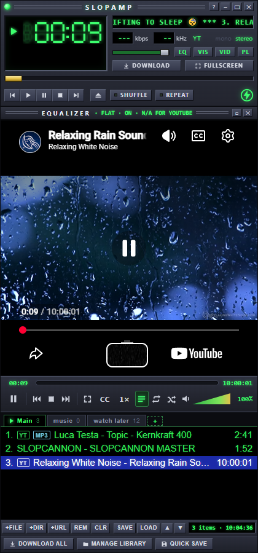
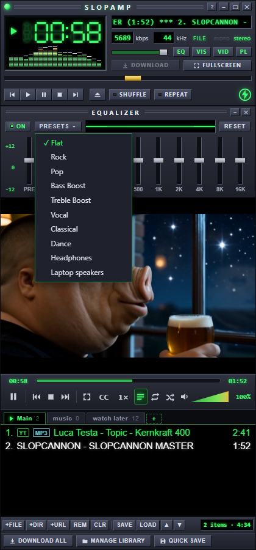
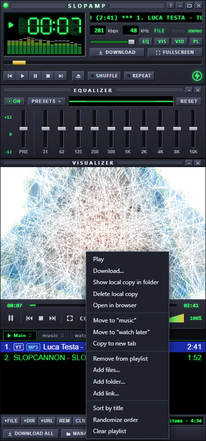
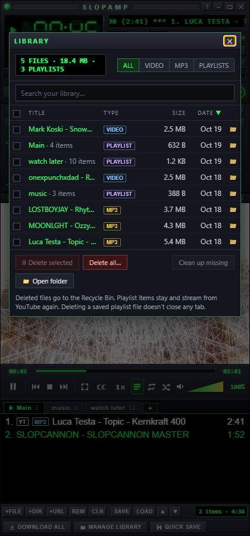
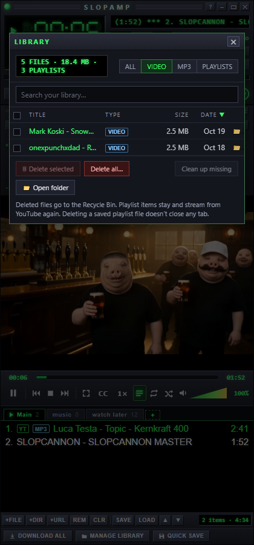
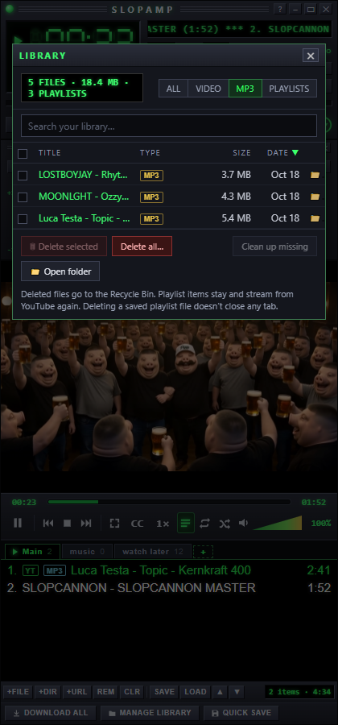
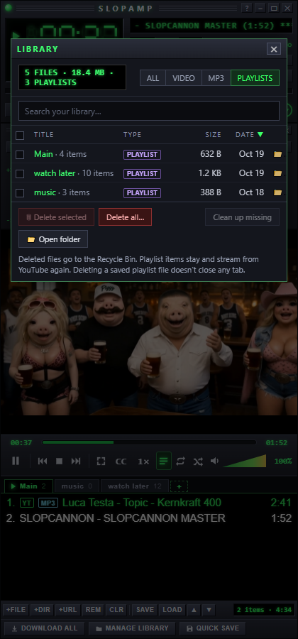
10 skins
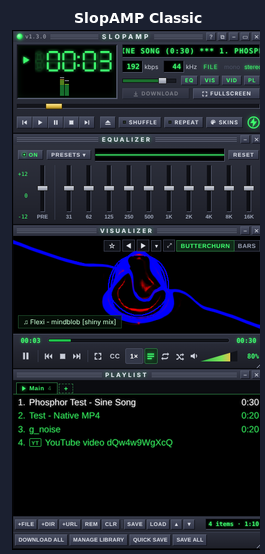
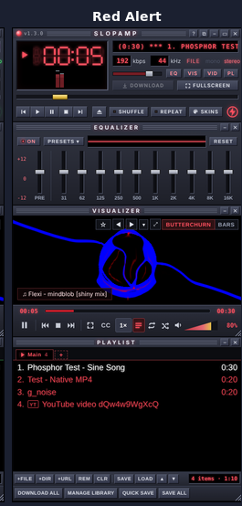
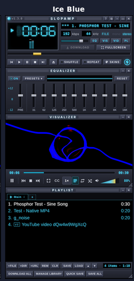
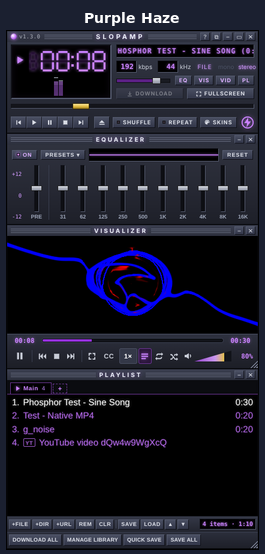
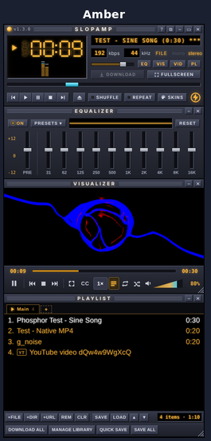
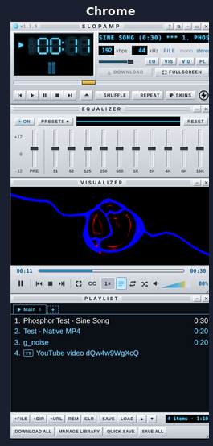
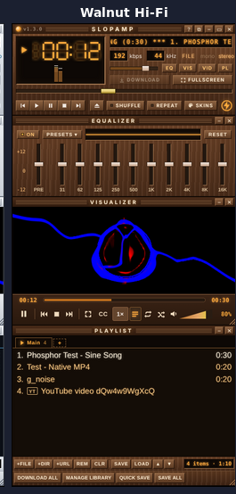
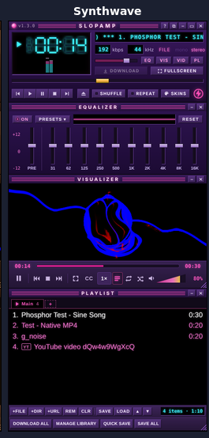
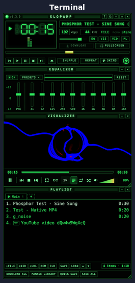
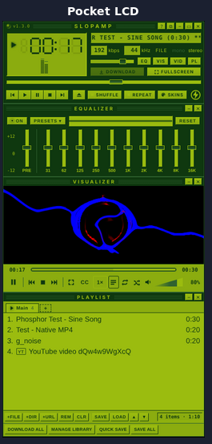
02 Features
- Playlist tabsJuggle multiple playlists at once.
- Save / Load / Quick SavePlaylists as .m3u8.
- Save AllQuick-save every playlist tab at once (Ctrl+Alt+S).
- Manage LibraryBuilt-in file manager: search and manage downloads and saved playlists.
- YouTube linksPlays & downloads YouTube links with yt-dlp. Delete a local download and the playlist falls back to the YouTube link automatically.
- Movable windowsPlayer, EQ, video/visualizer and playlist are separate windows. They snap together and to screen edges, move together when docked, and can be resized. Put the visualizer on a second screen.
- Layout menuOne-click presets: Classic, Playlist beside player, Big visualizer. Plus Reset layout (Ctrl+Alt+R).
- Roll-up / shadeRoll any window up to its title bar. Double-click the title bar to do the same.
- Auto-updateChecks GitHub daily. Notify me, Install automatically, or Off. Keeps your playlists and settings, and waits for you to click Restart now.
- EqualizerPush the sliders. Feel things.
- ResumePicks up where you left off.
- Playback speed1x to 3x.
- SubtitlesFor the videos.
- Media keysYour keyboard's play button finally matters.
- Fullscreen + compactGo big, or go narrow classic-sized.
- VisualizerPowered by Butterchurn, the free open-source MilkDrop engine — 1,700+ presets, plus favorites.
03 What's new in 2.3
- CLIPCut a piece out of any song or video and save it as a new MP3 or MP4 — waveform In / Out handles, preview, fades, Exact or Fast cut. Originals are never touched; clips land in Downloads\SlopAMP\mp3clips / mp4clips and the new Library → CLIPS tab. SHOTS grabs full-size reference frames from videos.
- YOUTUBE windowOpen youtube.com in its own SlopAMP window next to the stack. Drag a link or thumbnail onto a playlist tab, or hit + Add / Play in SlopAMP. No double audio.
- Classic (stacked, No EQ)A new Layout: the classic stack with the EQ window hidden (the EQ keeps working). Plus EDIT (the old SLOP button) opens CLIP on what's playing.
- New in 2.3.1The old SLOP code is gone (CLIP does all the editing now), and the lightning bolt remembers Classic (stacked, No EQ) when that was your last layout.
- Also in 2.1 / 2.2X video links with an [X] badge and Skip countdown, YouTube History + X History.
No install needed — just download and run
Classic / no Slop: still want the lighter 1.4.4 build? Setup 1.4.4 · Portable 1.4.4
04 Install & FAQ
Windows protected your PC(SmartScreen). Click More info, then Run anyway.
Also: All SlopAMP source code is open source and available to the public on GitHub, where the official download file is hosted.
- Is it free?
- Yes.
- Mac / Linux?
- Windows only for now.
- Windows installer?
- Yes — grab SlopAMP-Setup-2.3.1.exe.
- Portable version?
- Yes — grab SlopAMP-Portable-2.3.1.exe. No install needed.